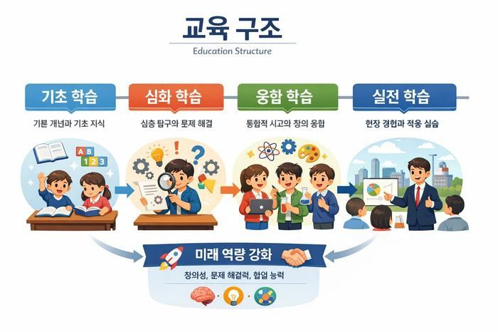
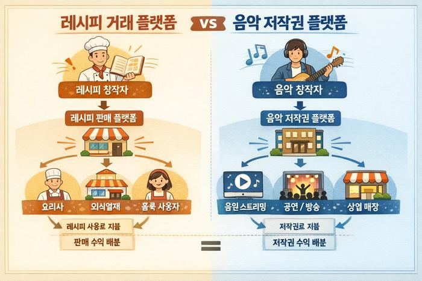

🛒 온라인 레시피 거래소 — 판매·검색·즉시거래·디지털 전달

🧭 교육 구조 — 기초·심화·융합·실전 학습 4단계

🎵 레시피 거래 플랫폼 vs 음악 저작권 플랫폼 — 수익 배분 구조 비교
CHALLENGE 해결하고자 한 과제
기존 소상공인 창업 교육은 이론 중심으로 구성되어 현장에 적용하기 어렵고, 교육 이후 지속적인 학습으로 이어지지 않습니다. 교육이 실제 매출과 연결되지 않아 효과도 제한적이며, 이는 높은 폐업률로 이어집니다. 레시피 기반 실습 플랫폼을 통해 창업자가 직접 판매를 경험하고, 매출 데이터를 분석하며 학습하는 실전형 창업 교육 모델을 제안합니다.
SOLUTION 기존 창업 교육의 한계 → 실전형 교육의 해법
기존 창업 교육, 이런 점이 한계였다면
- 이론 중심 강의 — 현장에 그대로 적용하기 어려움
- 교육 종료 후 지속적인 학습으로 이어지지 않음
- 교육 내용이 실제 매출과 연결되지 않음
- 반복되는 시행착오, 높은 폐업률
레시피 기반 실전 교육이라면
- 검증된 레시피를 선택·학습 후 자신의 매장에서 실제 판매
- 매출·재구매율·고객 반응 데이터로 성과를 평가
- 데이터를 바탕으로 레시피 개선·신메뉴 개발을 반복
- 우수 레시피는 플랫폼에 등록해 판매 수익 창출
- 매출 공개를 꺼리면 월 정기 레시피 사용료로 대체 가능
- 온오프라인 결합 커뮤니티에서 서로의 레시피를 참고·협업
"직접 매출로 연결되면 교육에 임하는 태도가 달라질 수 있다." — 교육 과정 자체가 곧 창업 활동이 되는 구조입니다.
PLAN 교육 구조 — 4단계 표준화
1
예비 — 시장 이해
트렌드 분석과 인기 레시피 탐색으로 시장을 이해합니다.
2
초기 — 실전 판매
검증된 레시피로 실제 판매 실습을 진행하며 실전 경험을 축적합니다.
3
성장 — 레시피 개발
기존 레시피를 개선하거나 신메뉴를 개발하는 프로젝트 기반 학습을 진행합니다.
4
확장 — 레시피 판매
본인이 개발한 레시피를 플랫폼에 등록·판매해 추가 수익을 창출합니다.
📈 레시피 구매 → 매장 운영·판매 → 매출 분석·학습 → 실전형 창업가로 성장
IMPACT 기대 효과 & 확산 전략
공공기관과 민간 플랫폼이 협력해 시스템을 구축하고, 정기적인 레시피 경연·인증 프로그램으로 우수 콘텐츠를 지속적으로 확보합니다. 창업자 커뮤니티를 활성화해 학습 네트워크를 형성하고, 장기적으로는 해외 시장까지 확장할 수 있습니다.
📈실제 시장 경험 기반 학습으로 창업 성공률 상승
📉시행착오 감소로 폐업률 완화
⚡트렌드 변화에 빠르게 대응하는 교육 구조
🤝소상공인 간 협업·정보공유 생태계 형성
🎼음악 저작권 공유 시스템처럼 레시피 판매 수익 배분
🌏공공·민간 협력 기반 인증 프로그램 + 해외 시장 확장
"팔아보면서 배우는 창업 교육이 가장 효과적인 교육이다."